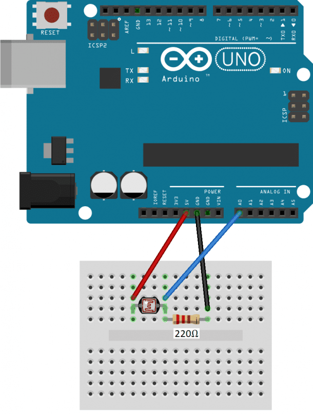
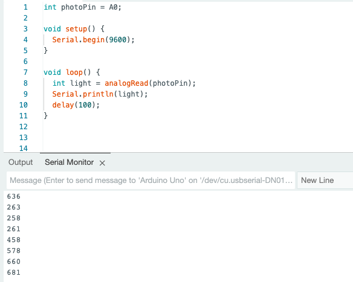
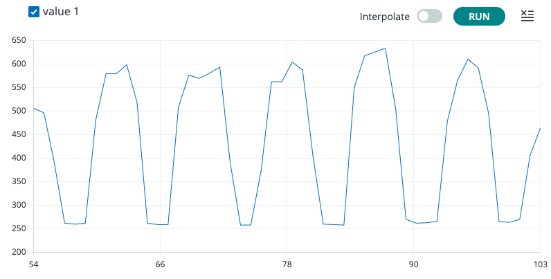
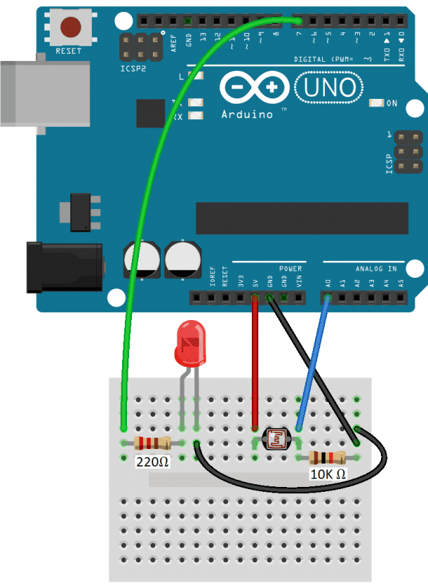
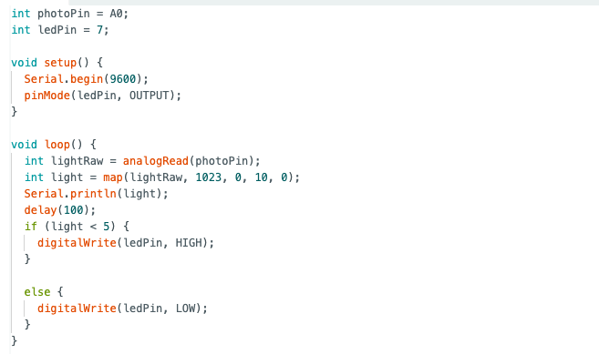

# capacitive sensor
# ---------------------------------
For my capacitive sensor, I made a scale/pressure sensor/"high when it's together low when it's apart" sensor. Allow me to explain.
The code originally was to spit out some arbitrary value that will be high when the plates are near each other and low when they are apart, hence the "high when it's together, low when it's apart" sensor, as Bobby so eloquently coined. Then, Bobby informed be that putting a buffer (in this case a piece of cotton) in between the two plates, I would 1) get a much more consistent reading and 2) be able to call this something other than a "high when it's together, low when it's apart" sensor, such as a scale or pressure sensor.

The results on the serial plotter:

The code:
int tx_pin = 4;
int rx_pin = A0;
int read_high;
int read_low;
int read_result;
int N_samples = 100;
int sum;
void setup() {
pinMode(tx_pin, OUTPUT);
Serial.begin(9600);
}
void loop() {
sum = 0;
for (int i=0; i < N_samples; i++) {
digitalWrite(tx_pin, HIGH);
read_high = analogRead(rx_pin);
digitalWrite(tx_pin, LOW);
read_low = analogRead(rx_pin);
read_result = read_high - read_low;
sum += read_result;
}
Serial.println(sum);
}
# Hall effect
# ---------------------------------
As part of my final project, I need to track the amount of rotations the motor crank completes. Instead of using an encoder to track the motor's rotations, I decided to make my own rotation tracker with a Hall effect sensor, magnet, and a little bit of pixie dust.
The hardware setup was quite simple: all I had to do was put the Hall effect in a fixed position and the magnet in a dynamic position. I taped the Hall effect sensor to the body of the DC Motor and taped the magnet to the crank arm. That way, whenever

this is what it looked like when i wired it.

here is the code i used. the variable "light" shows how much light is being received by the photoresistor.

i wondered how accurate the photoresistor was. i turned off all the lights in the room. initially, i tried using the flashlight on my phone to test how sensitive the photoresistor was. but on my iphone, i could only turn my flashlight onto four levels of brightness. so, i was unable to see if the photoresistor could detect small changes in light and whether those changes mapped onto the "light" variable in a linear fashion. i downloaded an app on my phone that let me adjust the brightness of my flashlight more finely and tried again. this is the graph plotted using the serial plotter where i am changing the light from bright to dark and back repeatedly.

# sensing light and controlling light
# ---------------------------------
i could imagine creating a simple tool that turns on lights when it's dark and turns them off when it's bright. i tried to create a simple non-trivial version of something like this by connecting an led to my light sensor.

here is the code i used. here, i am "mapping" the reading of the photoresistor onto a range from 0 to 10 because i realized that different photoresistors end up having vastly different readings. i am unsure why that happens.

here is a video of the led turning on and off depending on whether i am shining a flashlight on it or not.